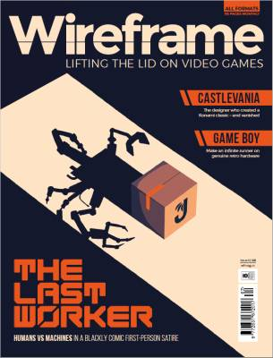

Revistas de informática
La fundación Raspberry Pi, creada en 2009 para la promoción de la informática en la enseñanza primaria y secundaria, comercializa desde febrero de 2012 la Raspberry Pi, una serie de ordenadores de placa reducida (SBC) de los que se han vendido casi 50 millones de unidades. La fundación también publica cinco revistas dedicadas a la informática, que se distribuyen en formato PDF de forma gratuita. Presentamos aquí tres de ellas.
THE MAGPI

The MagPi es la revista oficial de Raspberry Pi. Dirigida a la comunidad, ofrece todo tipo de proyectos relacionados con la Raspberry, tutoriales sobre informática y electrónica, guías y las últimas noticias y eventos de la comunidad. Se encuentra a caballo entre la programación y la electrónica. En cada número encontrará tutoriales sobre temas como: automatización del hogar, robótica, inteligencia artificial, impresión 3D, juegos, etc.
The MagPi fue la primera revista publicada por la Raspberry Foundation. El primer número de The MagPi se publicó en mayo de 2012 y el último número publicado es el número 118, correspondiente a junio de 2022.
⮴
CUSTOM PC

Custom PCes la revista más vendida en el Reino Unido dedicada al hardware de PC, al overclocking, el gaming o el modding, Cada mes Custom PC incluye análisis en profundidad de equipos y componentes, guías paso a paso ilustradas y artículos informativos, todo ello enfocado al usuario dispuesto a trastear con su ordenador. En la revista también encontrarás artículos de opinión, críticas de juegos y todo tipo de contenido para el aficionado a los ordenadores, desde pequeños proyectos para Raspberry Pi a personalizaciones avanzadas de PCs.
Custom PCera una revista comercial. El primer número de Custom PCpublicado tras su compra por parte de la Raspberry Pi Foundation fue el número 214, publicado en mayo de 2021 y el último número publicado es el número 226, publicado en mayo de 2022.
⮴
WIREFRAME
Wireframe es una revista mensual dedicada a videojuegos. Cada número está dedicado a ver cómo se hacen los juegos, quiénes los hacen e incluso te guiaremos a lo largo del proceso de que crees tus propios juegos.
El primer número de Wireframe se publicó en noviembre de 2018 y el último número publicado es el número 62, correspondiente a mayo de 2022.
⮴
Última modificación: 31 de mayo de 2021